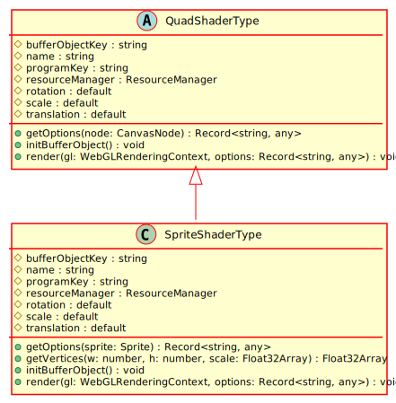

Hierarchy-Diagram
{kind=link}
Legend
 class
class
 abstract class
abstract class
 protected property
protected property
 public method
public method
italic
abstract property/method
Hierarchy
- QuadShaderType
- SpriteShaderType
Index
Constructors
constructor
Parameters
programKey: string
Returns SpriteShaderType
Properties
Protected buffer
The key to the buffer object for this shader
Protected name
The name of this shader
Protected program
The key to the WebGLProgram in the ResourceManager
Protected resource
A reference to the resource manager
Protected rotation
The rotation matrix
Protected scale
The scale matric
Protected translation
The translation matrix
Methods
get
Extracts the options from the CanvasNode and gives them to the render function
Parameters
sprite: Sprite
Returns Record<string, any>
An object containing the options that should be passed to the render function
get
The rendering space always has to be a square, so make sure its square w.r.t to the largest dimension
Parameters
w: number
The width of the quad in pixels
h: number
The height of the quad in pixels
scale: Float32Array
Returns Float32Array
An array of the vertices of the quad
init
Initializes any buffer objects associated with this shader type.
Returns void
render
Loads any uniforms
Parameters
gl: WebGLRenderingContext
options: Record<string, any>
Returns void
A shader for sprites and animated sprites